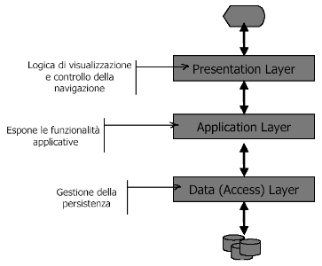

Si è tentato di procedere con un approccio a partire dai casi d'uso per escrivere l'intera applicazione Web, ma vista la complessità del problema non è possibile esporre con ordine a questo livello tutti i casi d'uso quindi si rende necessaria una suddivisione del problema in sottoparti.
Dalle esperienze acquisite dalla prima versione di UniversiBO si è riscontrata la necessaria suddivisione del problema in sottoparti. Questa suddivisione può essere concettualmente vista in due "direzioni" diverse:
Verticale:
- presentazione
- logica dell'applicazione
- persistenza dei dati
Permette la suddivisione dei compiti del team di sviluppo e il lavoro in parallelo
sui tre livelli.
Permette una specializzazione delle conoscenze dei componenti del team sulle
tecnologie proprie di ognuno dei livelli

Orizzontale:
- framework per i servizi
- servizi
Permette lo sviluppo incrementale dell'applicazione, dopo aver creato il framework
si possono aggiungere incrementalmente nuovi servizi e seguente il rilascio
dell'applicazione alla fine di ogni ciclo.